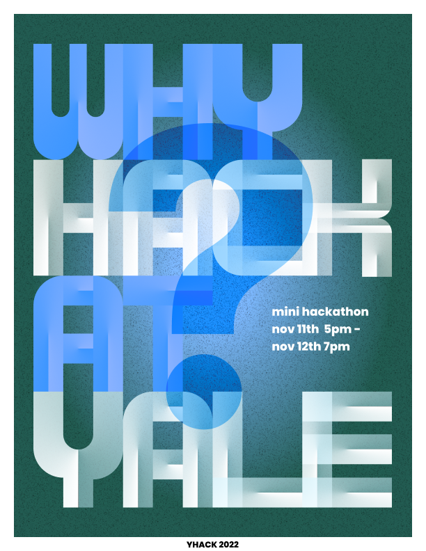
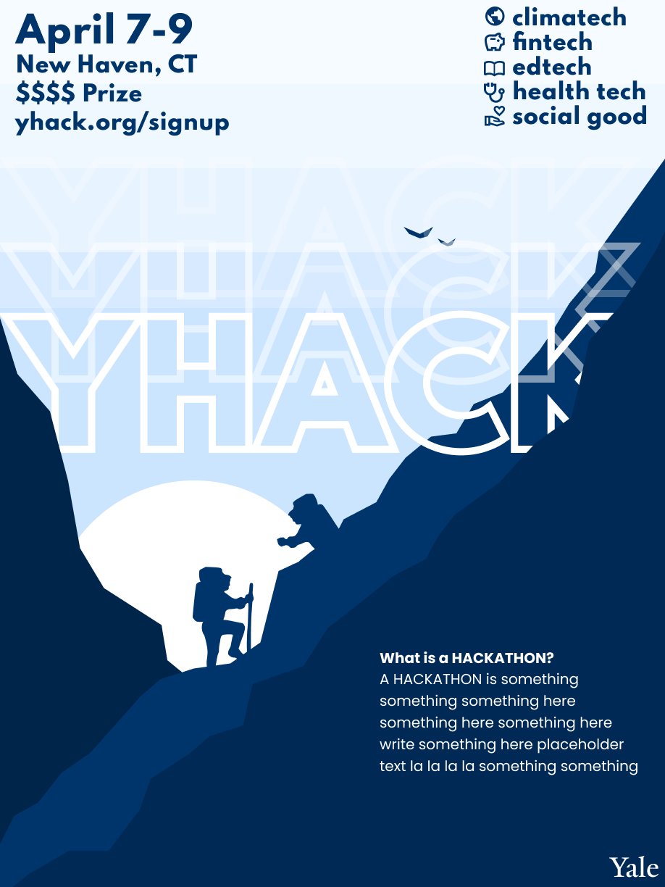
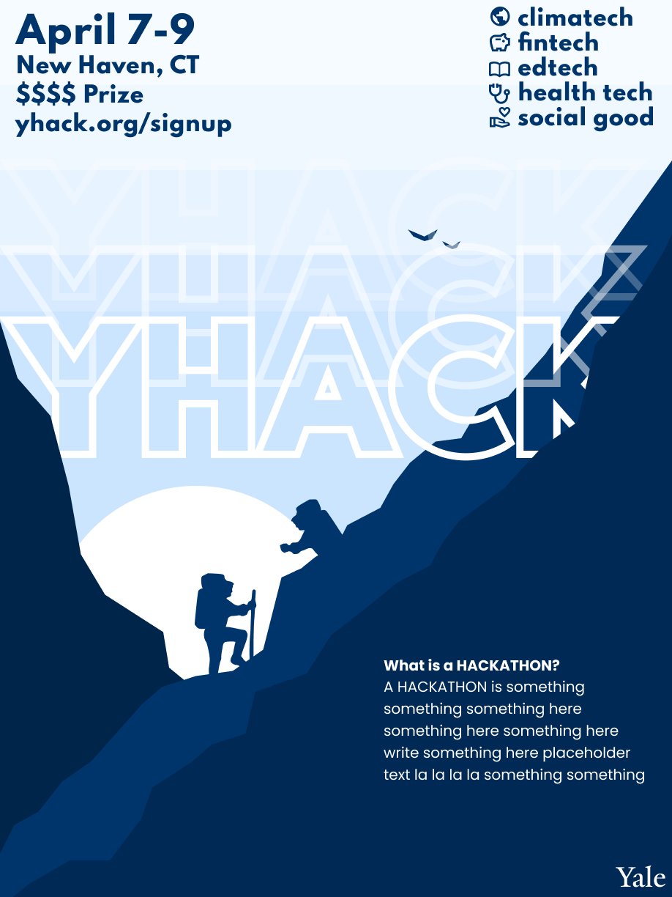

Synthetic Rims
A essential part of training a deep learning network on medical images is the data itself. Medical data is limited by many factors such as human scanning, patient availability, and the count of lesions.
In 2022, QSMRim-Net proved to be the state of the art model for detection of rim lesions for multiple sclerosis. The issue is, rim lesions are rare, creating a data imbalance issue and hindering the model's performance.
I propose a new method: by synthesizing rim lesions on QSM given information from FLAIR image masks, we solve the data imblanace issue by increasing the rim lesion count for ~130 to over 10,000. This greatly expanding the possibilites for machine learning methods.
Training a simple ResNet18 model on the synthetic data outperforms the state of the art QSMRim-Net.
Additionally, I also developed a program that streamlines the data collection to visualization pipeline, as well as developing a more efficient visualization GUI for 3D image patches.
Currently drafting a first author publication.
Languages and technologies used: Python, NumPy, SciPy, MATLAB, Pandas, PyTorch, TorchIO, sci-kit learn, ITK-SNAP
Yale Center for Biodiversity and Global Change
As a data science intern, I worked on Yale BGC's flagship project, the Map of Life (mol.org)
Geographic information about biodiversity is vital for understanding the many services nature provides and their potential changes, yet remains unreliable and often insufficient. Built on a scalable web platform geared for large biodiversity and environmental data, Map of Life endeavors to provide 'best-possible' species range information and species lists for any geographic area. Map of Life aims to support effective and global biodiversity education, monitoring, research and decision-making by assembling and integrating a wide range of knowledge about species distributions and their dynamics over time.
I work closely with a team of four on improving the workflow of the implementation of species distribution models (SDMs), which is the backbone for interpreting spatial and environmental data pertaining to any species. This allows for spatial predictions to be made based on the niche and behavior of a given species. My responsibility is to implement a report generation system to the current workflow, which visualizes the summary statistics once a model has been run.
Languages and technologies used: R, SQL, Python, QGIS

VinBigData
VinBigData JSC was founded as part of a key strategic development for Vingroup's goal of becoming a world-class Technology - Industrials - Services corporation, with technology taking center stage. Thanks to the competitive advantage of large-scale database, VinBigData provides cutting-edge products and platform solutions based on Big Data and Artificial Intelligence with world-class quality, supporting enterprises to accelerate digital transformation, optimize operation and business efficiency as well as enhance end-user experience.
I worked on the computer vision team, where we designed and tested methods to use deep learning for medical image segmentation.
Here, I built a 3D U-Net based model from scratch for liver lesion segmentation on CT scans.
Languages and technologies: Python, PyTorch, NumPy

YHack
Check out the website I built for the official Yale Hackathon! (yhack.org)
Also as design lead, I was responsible for making the advertisements (and the logo!)
 

Languages and technologies: HTML, CSS, React.js, Typescript, JavaScript, Figma
ymeets.org
Official meeting scheduling application for Yale students and faculty (not yet released) (ymeets.org)
Languages and technologies: HTML, CSS, React.js, Typescript, JavaScript, MongoDB, AWS